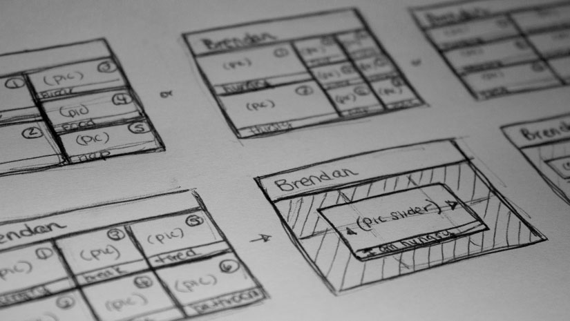
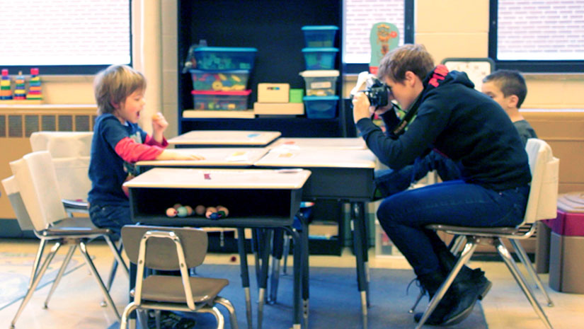
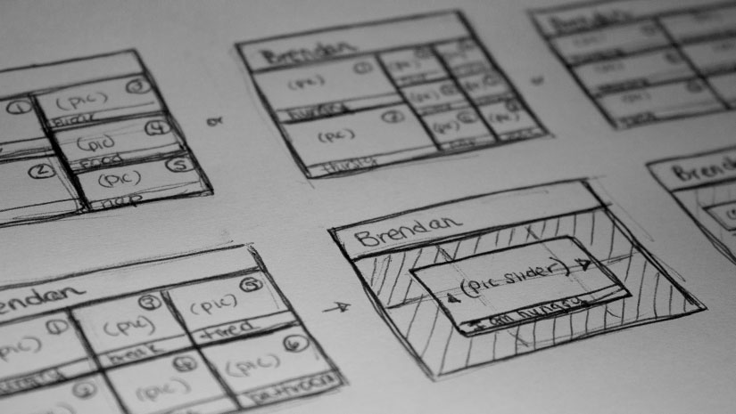
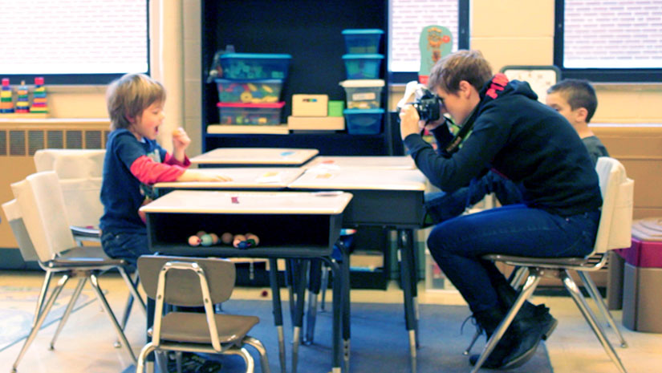

Foster Paws Alyssa Hans
more...Helping children learn care routines with a companion app for pet foster programs.
close


Children often want pets, but are turned off by the responsibilities. This mobile task management app helps kids age 9 to 12 track pet care chores and learn their animal’s daily needs. The app complements pet foster programs lasting a fixed period of time. After completing the program, the parents receive the child’s results, opening opportunities for discussion on the family’s pet readiness.
A proud Kentuckian, Alyssa discovered design through years of art classes. Through co-ops, she came to love interaction design. She also likes cooking, traveling, yoga, concerts, drumming, cats, dogs, and making zombie plans. Alyssa values optimism and patience, which explains her devotion to Cincinnati's professional sports teams. She knows LaRosa's pizza and Skyline Chili are the keys to world peace, and she's unsure if she looks good in hats.
ACT: Autism Communication ToolAnnie Davis & Sarah Weinstein
more...Encouraging classroom communication through interaction.
close 



One of the greatest contributors to meltdowns and behavioral outbursts in the classroom for children with Autism is their inability to verbally communicate their wants and needs. What if classroom communication between students with Autism and their teachers could be improved, meltdowns could be prevented, and verbal communication could be encouraged with an interactive tool? Our iPad application promotes success in education by allowing children with Autism to verbally communicate their wants and needs through imagery and sound.
Being visual and kinesthetic learners themselves, Annie and Sarah both entered DAAP with enthusiasm for interactive media and a desire to use the visual world as communicative art. Their combined passions for design research, interactive design, user experience design, and problem solving have guided them through many rewarding experiences.
Connected ComicsBob Kelley
more...Make new friends and share comics in the digital age.
close


Brick and mortar comic shops have represented a safe place for comic book conversation and trading since their inception. Connected Comics is a tablet application dedicated to recreating that experience for the digital generation. My goal is to use local network connections to encourage discussion, trading, and recreate that experience on the go.
Bob grew up with an interest in comic books, videogames, and heavy metal. From a young age he found an interest in emulating the lessons these media provided, and design school was the logical next step. These days the majority of his time is spent finding creative ways to procrastinate.
The United States of AppalachiaCam Helffrich
more...Creating awareness about Central Appalachian poverty and driving volunteerism among college students.
closeThe region of Appalachia in Eastern Kentucky holds a poverty rate more than two to three times the United States national average. “The United States of Appalachia” is documentary exposing the rampant poverty within the region and a call to action for college volunteerism through the Appalachia Service Project. The documentary is paired with a microsite that informs, motivates and streamlines the volunteer process.
Collectively their co-op jobs have taken them to Boston, LA, Newport Beach and Philly. Following graduation, Jake and Cam both plan to return to Boston to work in web and pursue athletic careers in rowing and rugby, respectively. They continue to kick ass in the gym and the kitchen. They are not your stereotypical designers. Wu-Tang forever.
HomewordCaroline Baritot
more...Connecting co-op students to find roommates and reliable housing.
closeDeciding on where to live is an important decision that co-op students are usually rushed to make. In that rush students sometimes can become victims of scams or settle for a less than perfect living situation. HomeWord solves these problems by connecting students to eachother to find roommates and promoting only student endorsed housing.
Type 1 ManagerChristie Gettler
more...Managing Type I Diabetes is important, but life can get in the way. Type I Manager can help to make treatment safer, easier, and more effective.
closeManaging Type I Diabetes can be a lot of work - remembering to test blood glucose 4-10 times a day, counting every carb and mintue of exercise, calculating and administering insulin doses - it can be overwhelming. Type I Manager is a mobile application for individuals with Type I where they can set personal reminders to test their blood glucose, change their infusion sets, and reorder supplies, help them calculate proper insulin doses, and track patterns in their blood glucose, insulin, and activity levels. The app also has a safety feature that will notify an emergency contact with a text message and the individuals GPS location should they experience a diabetic crisis.
Christie is a Cincinnati native that has recently fallen in love with traveling. When not designing, nothing beats a good book, stand-up comedy, or play-off hockey.
BleeperCody McCarthy
more...A music education game for elementary school students.
closebleeper is a video game that teaches elementary school students music curriculum through casual gaming. Creating a game out of the curriculum increases motivation and active engagement in learning. Approaching students this way makes learning more fun and effective than traditional learning techniques.
ABOUT ME WHATEVER
On tourColin Hoell
more...Focus on the music. Simplify Your Tour.
closePlanning a tour can be tricky, especially since these days bands are responsible for everything from booking a show to updating their twitter. OnTour allows bands to quickly and easily find tour routes and contact local venues and musicians in cities they would like to play. It takes the frustration out of booking a tour and allows more time for bands to focus on the music.
Colin is a guy who likes a lot of things, especially music and frogs.
Photo Field CompanionEric Gentry
more...Helping photographers learn in the field
closeCommon photo learning resources aren't well-suited for use in field environments, which represent an underutilized educational opportunity for photographers. By redesigning the function and form of photo learning content, photographers can learn and develop important skills more quickly and completely.
Eric has long been seated at the intersection of art, math and science. The interplay between these domains is something that has driven his passion for graphic design, photography, programming and computer graphics since his youth. When not pursuing these endeavors, he spends his time reading a variety of genres, casterboarding, running and flying RC helicopters, among other things.
Changing the Way We Donate Jared Fite
more...A responsive site that allows for an easy, streamlined process for donating to needy children.
closeRecently I have been deeply involved in a children's home called Casa Hogar Mamá Paulita down in Mexico. Through this experience, I have witnessed the donation process and how it works. While the home was grateful for the money received, it rarely covered all of the expenses needed for each child. Figuring out a new system of donations will not only help this children's home, but could be used as a model for other organizations.
Jared has always been interested in creative and interactive media. While he originally wanted to work within the animation field, he felt himself drawn towards interactive design. Creating great user experiences gives him great joy and he hopes to continue this career path wherever it takes him.
LDRJesse Prehodick
more...The best way to share your memories and experiences with the most important person in your life, even if they're far away.
closeLDR is an app to help build a stronger relationship between couples in long distance relationships. Although smartphones help considerably with allowing couples to communicate, there needs to be a better way for them to share and save their most precious memories and experiences with each other. By using LDR, couples will be able to regain a sense of intimacy that they lose from being away from each other.
Ever since Jesse was a little kid he has always loved to learn new things. He his always scouring the internet looking for the newest trends in design and technology to get a step ahead of the rest of the field. When he's not designing you can probably find him watching sports, playing video games, or enjoying a good bacon cheeseburger.
The Atomic FactoryMatt Pemberton
more...A learning game, focusing on elemental atomic structures, and building new molecules
closeThe Atomic factory is a science game dedicated to teaching kids the basics of chemistry. Learn about atomic mass! Build your own atoms! Smash those atoms together at such a high rate of speed as to create useful molecules...or destroy the fabric of space and time. Y'know, Whichever.
Dr. Mathew Pemberton spent his early years studying neuroscience at MIT until he got bored with that and came to DAAP to study digital design. Among other hobbies, Dr. Pemberton is a fantastic bard, singing tales in his spare time.
Music MateMac Clenney
more...Keeping students interested in practice through a fun and social game environment.
closeBeginning music students often find the tedium of regular practice boring. Because of this, they may improve slowly and can quickly become discouraged from continuing with music study. This game helps beginning piano students overcome some of the challenges of learning to read music through a fun and interactive experience. It also has the benefit of providing continuous feedback on the students progress to their teacher.
Mac has been an artist and musician his entire life. Spending his first year in college at the College-Conservatory of Music before transferring to DAAP, choosing a music related capstone was a no-brainer. He hopes to continue to travel the world and share his passion for music and design after graduation.
GootieMegan Geiman & Meredith Ross
more...Making responsible waste management fun for elementary school students.
closeGootie is a multimedia design campaign to educate young children on the importance of responsible waste management. First the students receive an activity-filled workbook teaching them about the three kinds of waste, and where their waste goes. Once they've completed these activities, an interactive trash can exhibition will arrive in their cafeteria. Gootie's goal is to teach students that responsible waste management can be easy and most importantly, fun!
The M's are strongly interested in the combination of visual and interaction design. Outside of studio, Meg enjoys rock climbing, her toothless cat, and cute candies. Meredith enjoys NBC sitcoms, the Browns, and sandwiches. They've spent time in LA, San Francisco, and Seattle, and were inspired by West Coast consciousness.
Passage magazinekaity Hammerstein
more...Understand world news from a personal perspective.
closeA digital news magazine focused on making complex global news issues clear to a younger audience. The magazine does this through long-form, interactive stories that help readers understand context and relate to the people affected.
Kaity has brown hair. Her favorite color is red. She likes cute shoes n horses and loves her mom and dad. Have you ever asked her about her cat's back moustache?
DrawigamiKyle Baker
more...Merging digital and physical play.
closeWe believe that creativity is cultivated through a healthy balance between digital and physical play. To test this theory, we are creating an iPad application that fuses origami paper craft and elements of a drawing application to promote creative play in both a digital and physical environment.
Kyle has always found problem solving to be fascinating, over time, converting him from derivatives to design. He has been an avid fantasist his entire life and now can't seem to turn off his filter for design thinking. His CS buddy Matt Fye is pretty cool too. They have co-created unscriptedGames LLC and plan to pursue their passion for game design in their spare time after college.
Cache mapperRyan Arthur
more...I have no idea what I should put here..
closeThis is a copy of Kyle's speech. Disregard. We believe that creativity is cultivated through a healthy balance between digital and physical play. To test this theory, we are creating an iPad application that fuses origami paper craft and elements of a drawing application to promote creative play in both a digital and physical environment.
Kyle has always found problem solving to be fascinating, over time, converting him from derivatives to design. He has been an avid fantasist his entire life and now can't seem to turn off his filter for design thinking. His CS buddy Matt Fye is pretty cool too. They have co-created unscriptedGames LLC and plan to pursue their passion for game design in their spare time after college.